A guided tour of the top 100 courses in America
Skip Perry, October 2020
Every two years, Golf Digest and Golf Magazine issue widely read and debated rankings of the nation’s best golf courses. Ranking golf courses, like ranking colleges, is both a fool’s errand and a natural instinct. Golfers can’t help but compare and contrast the courses they have played, and those comparisons can be quantified and arranged. The resulting ranking has no bearing on how much a player enjoys a round of golf but can be a major feather in the cap for courses across the country.
The project of ranking American golf courses has been a decades-long undertaking - Golf Digest started releasing rankings from #1 to #100 in 1985, while Golf Magazine followed suit in 1991. (Before 1985, Golf Digest grouped courses into First 10, Second 10, Third 10, Fourth 10, Fifth 10, and Second 50, a format which makes more sense but doesn’t sell as many magazines.)
This is an extremely rich set of data, but until now there hasn’t been a practical way to explore it visually or temporally. The two magazines do not make their historical data easily available and tend to make comparisons only between the current and previous issues. Visualizations that allow for tracking trends over time allow the observer to answer a number of interesting questions about how opinions have changed over the past three decades. Which courses and schools of design have staying power? What are some architectural trends that have come and gone? Which designers have trended up or trended down? Are there any interesting geographical patterns? What kind of differences are there between the two magazines’ rating systems?
Typos and incorrect information are almost assured; indeed, there is sometimes conflicting or missing information even within the same magazine issue. Please feel free to send over corrections, fixes and suggestions to golfcourserankings@gmail.com.
The blue bloods
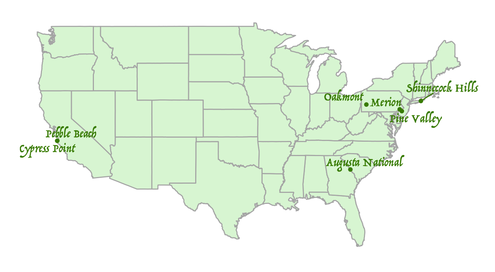
| Course | Location | Year Designed | Golf Digest | Golf Magazine | Average |
|---|---|---|---|---|---|
| Pine Valley | Pine Valley, NJ | 1918 | 1 | 1 | 1 |
| Cypress Point | Pebble Beach, CA | 1928 | 3 | 2 | 2.5 |
| Shinnecock Hills | Southampton, NY | 1931 | 4 | 3 | 3.5 |
| Augusta National | Augusta, GA | 1933 | 2 | 6 | 4 |
| Oakmont | Oakmont, PA | 1903 | 5 | 5 | 5 |
| Merion | Ardmore, PA | 1912 | 6 | 8 | 7 |
| Pebble Beach | Pebble Beach, CA | 1919 | 7 | 10 | 8.5 |
In both publications, the top 10 is rarefied air that has been occupied almost exclusively by a small number of classic courses built during golf’s “golden age” of design:
- Pine Valley (top 2 in every ranking in both publications)
- Cypress Point (top 5 in every ranking)
- Augusta National (top 5 in every ranking until this year)
- Shinnecock Hills (top 6 in every ranking)
- Pebble Beach (top 7 in every ranking until this year)
- Oakmont (top 8 in every ranking since 1993)
- Merion (top 8 in every ranking since 1995)
Golf Magazine has been especially ossified at the top - Pine Valley and Cypress Point have been ranked #1 and #2, respectively, in every Golf Magazine list since its first publication in 1991.
With the exception of Pebble Beach, membership rolls at these courses are populated by captains of industry and it is nearly impossible for the average golfer to get on for a round. Two of them are not tournament-ready - Pine Valley has never hosted professional events while Cypress Point pulled out of the Bing Crosby Clambake more than 30 years ago and plays to 6524 yards from the tips - but the rest are current and former hosts of some of the most prominent professional and amateur competitions.
Despite universally acclaimed designs and decades of tournament experience, among the other five courses only Oakmont has managed to keep up with modern ball and club technology. Merion’s 2013 US Open setup received mixed reviews and the club may have to wait until 2030 for a return visit; Shinnecock Hills has been the site of two consecutive USGA PR catastrophes; and last year’s US Open at Pebble Beach saw players hitting hitting the 6th hole in two with a 3 wood and a mid-iron. Perhaps it’s just a coincidence, but Pebble fell to its all-time low of 10th in the Golf Magazine ratings.
Even Augusta National, which has unlimited resources and only a few months of on-course play each year, is struggling to maintain shot values. In a borderline heretical move, Golf Magazine put Augusta National on notice with a column disparaging the club’s recent design changes and ended its seemingly permanent streak in the top 5. What does it mean for the game of golf if technological changes make the world’s best courses obsolete for PGA Tour pros?
The new (and newly revitalized) blue bloods
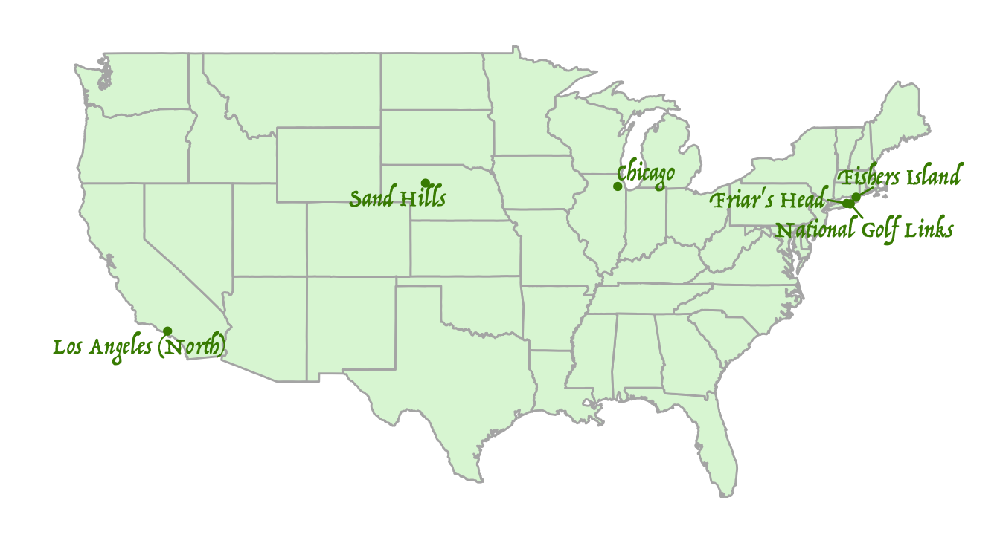
| Course | Location | Year Designed | Golf Digest | Golf Magazine | Average |
|---|---|---|---|---|---|
| National Golf Links | Southampton, NY | 1911 | 8 | 4 | 6 |
| Sand Hills | Mullen, NE | 1995 | 9 | 7 | 8 |
| Fishers Island | Fishers Island, NY | 1926 | 10 | 9 | 9.5 |
Like high society in real life, entry into the top echelons from the outside is rare but not impossible. Three courses have made a move into the top 10, two by staging comebacks and the other by single-handedly changing the course of golf course architecture in the new millennium. C.B. Macdonald’s National Golf Links of America was once ranked #56 by Golf Digest and #26 by Golf Magazine but has vaulted up to #8 and #4, respectively, while Fishers Island, currently #10 and #9, was out of the top 100 altogether in Golf Digest as recently as 1999. Joining
Now firmly in the top 10 in both lists, Sand Hills’ standing is perhaps the most remarkable on the entire list. The influential 1995 Bill Coore and Ben Crenshaw design is more than 60 years newer than the second-youngest top 10 course (Augusta National, 1933) and it is the only top 10 course located between Oakmont on the east and Monterey on the west.
If this is the B-list, it’s quite the B-list
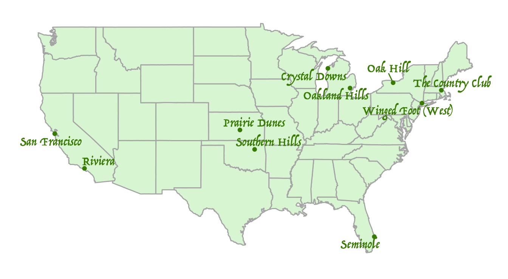
| Course | Location | Year Designed | Golf Digest | Golf Magazine | Average |
|---|---|---|---|---|---|
| Winged Foot (West) | Mamaroneck, NY | 1923 | 11 | 15 | 13 |
| Friar’s Head | Baiting Hollow, NY | 2002 | 15 | 13 | 14 |
| Crystal Downs | Frankfort, MI | 1931 | 13 | 16 | 14.5 |
| Seminole | Juno Beach, FL | 1929 | 12 | 20 | 16 |
| Riviera | Pacific Palisades, CA | 1926 | 23 | 17 | 20 |
| The Country Club | Chestnut Hill, MA | 1895 | 18 | 22 | 20 |
| Prairie Dunes | Hutchinson, KS | 1937 | 27 | 18 | 22.5 |
| Oakland Hills | Bloomfield Hills, MI | 1918 | 20 | 35 | 27.5 |
| San Francisco | San Francisco, CA | 1924 | 35 | 21 | 28 |
The courses in this group have been mainstays in in the top 20 - though generally not the top 10 - in at least one of the two rankings. Again, we see a split between major championship venues and clubs that have shunned the inconvenience and attention that come with hosting tournaments. We can also divide this group between the first three, which are consensus top 20 courses, and the rest, which are outside the top 20 in one of the two publications.
Not long ago, the West course at Winged Foot would have qualified for the “blue blood” set, but the legendary US Open venue has fallen out of the top 10 in both magazines. Comments by Golf Digest raters, some of whom call it “less interesting” than the club’s East Course and situated on a property that is “downright ordinary with little topographical character,” are surprisingly negative for such a highly ranked course. Will a recently completed greens restoration and publicity from hosting the 2020 US Open vault it back into the top 10?
Friar’s Head, another Coore and Crenshaw collaboration, deserves kudos as the only post-World War II course aside from Sand Hills to maintain a position in the top 15 of either ranking.
Trouble in paradise, part 1: upper crust division
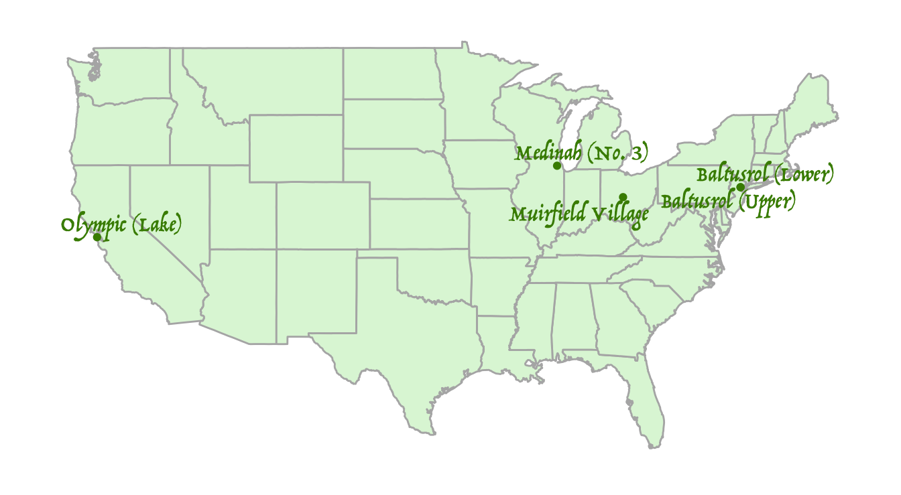
| Course | Location | Year Designed | Golf Digest | Golf Magazine | Average |
|---|---|---|---|---|---|
| Oak Hill | Rochester, NY | 1925 | 22 | 40 | 31 |
| Southern Hills | Tulsa, OK | 1936 | 34 | 28 | 31 |
| Muirfield Village | Dublin, OH | 1974 | 16 | 51 | 33.5 |
| Olympic (Lake) | San Francisco, CA | 1924 | 33 | 54 | 43.5 |
| Baltusrol (Lower) | Springfield, NJ | 1922 | 41 | 69 | 55 |
| Baltusrol (Upper) | Springfield, NJ | 1922 | 61 | 99 | 80 |
| Medinah (No. 3) | Medinah, IL | 1928 | 53 | - | - |
Of course anyone would love to belong to clubs like these, but the trend lines speak for themselves. Board members at these courses are faced with some tough questions to answer. What’s causing the slide? If a problem can be identified, is it fixable, and if so, for how much money and time? Should members care? It’s easy to say they shouldn’t, but it’s a tough pill to swallow (and bad for business) when your course drops 20, 30, or more places in the rankings table.
In the past, Muirfield Village has been by far the highest-rated course in this group but Jack Nicklaus himself believes there is work to be done - the club announced a two-year renovation with the goal of maintaining Nicklaus’ “old-fashioned beliefs” about golf course design while protecting par against PGA Tour players. As Augusta National has found, easier said than done.
The Olympic Club recently defected from the USGA to the PGA of America, the highest profile example yet of old-line clubs crying uncle on the USGA’s tournament management. The controversial 1998 US Open setup appears to have led directly to a drop in the Lake Course’s reputation and new bunkers installed by the USGA ahead of the 2012 US Open remain detested by many members. Perhaps a more permissive setup that allows for a PGA Championship and Ryder Cup where the players, not the course, are the story will allow the hillside club to restore its position near the top of the rankings.
All the while, ghosts of magazines past are lurking:
- Shoal Creek, once ranked #11, out of both rankings
- Long Cove, once ranked #19, out of both rankings
- Laurel Valley, once ranked #22, out of both rankings
- Colonial, once ranked #22, out of both rankings
- Jupiter Hills, once ranked #23, out of both rankings
- Black Diamond Ranch, once ranked #24, out of both rankings
The bottom can fall out quickly. In 2001, Wannamoisett was ranked #35 by Golf Digest and #64 by Golf Magazine. In the span of only six years, it fell out of both rankings completely and hasn’t been seen in the top 100 since.
Returning to glory
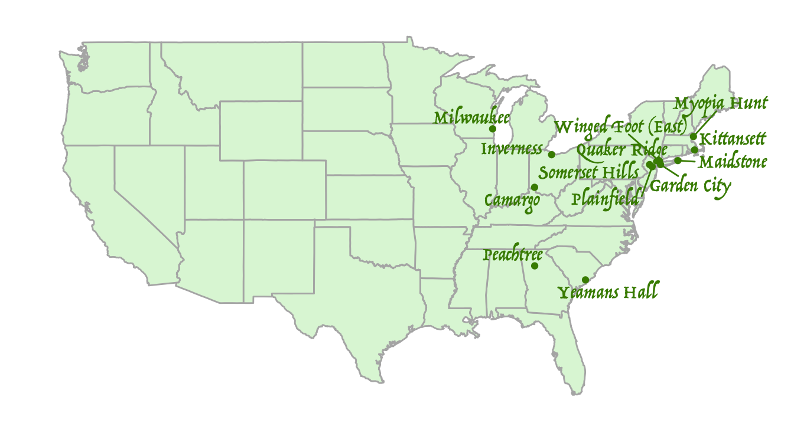
| Course | Location | Year Designed | Golf Digest | Golf Magazine | Average |
|---|---|---|---|---|---|
| Chicago | Wheaton, IL | 1894 | 14 | 14 | 14 |
| Los Angeles (North) | Los Angeles, CA | 1921 | 19 | 12 | 15.5 |
While a number of classic courses that have been muscled out of the top third of the charts, two lucky clubs have been rewarded for renovation work by trendy architects and publicity bumps after hosting major amateur and professional events. This list of comeback kids is not a long one even if you add National and Fishers Island, the only other pre-war venues that have managed to make moves into the upper tier in both rankings.
A few merely fantastic courses that you also won’t be able to get on (old school)
| Course | Location | Year Designed | Golf Digest | Golf Magazine | Average |
|---|---|---|---|---|---|
| Peachtree | Atlanta, GA | 1947 | 30 | 37 | 33.5 |
| Camargo | Indian Hill, OH | 1927 | 44 | 26 | 35 |
| Garden City | Garden City, NY | 1899 | 51 | 25 | 38 |
| Somerset Hills | Bernardsville, NJ | 1918 | 63 | 23 | 43 |
| Maidstone | East Hampton, NY | 1924 | 67 | 29 | 48 |
| Winged Foot (East) | Mamaroneck, NY | 1923 | 52 | 46 | 49 |
| Quaker Ridge | Scarsdale, NY | 1918 | 71 | 39 | 55 |
| Myopia Hunt | South Hamilton, MA | 1898 | 76 | 43 | 59.5 |
| Inverness | Toledo, OH | 1919 | 88 | 33 | 60.5 |
| Kittansett | Marion, MA | 1922 | 78 | 58 | 68 |
| Plainfield | Edison, NJ | 1921 | 82 | 57 | 69.5 |
| Yeamans Hall | Charleston, SC | 1926 | 95 | 47 | 71 |
| Milwaukee | River Hills, WI | 1929 | 74 | 71 | 72.5 |
| Baltusrol (Upper) | Springfield, NJ | 1922 | 61 | 99 | 80 |
| Aronimink | Newtown Square, PA | 1928 | 85 | 89 | 87 |
These highly rated private clubs, all east of the Mississippi River, tend to have relatively stable ratings in the 40-80 range. All of them were designed in the 1920s and earlier except Peachtree, which earns honorary “golden age” status from its Bobby Jones connection.
A few merely fantastic courses that you also won’t be able to get on (new school)
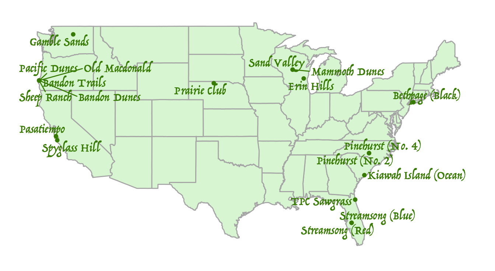
| Course | Location | Year Designed | Golf Digest | Golf Magazine | Average |
|---|---|---|---|---|---|
| Ballyneal | Holyoke, CO | 2006 | 46 | 34 | 40 |
| The Golf Club | New Albany, OH | 1967 | 38 | 42 | 40 |
| Honors Course | Ooltewah, TN | 1983 | 28 | 63 | 45.5 |
| Pikewood National | Morgantown, WV | 2009 | 40 | 60 | 50 |
| Old Sandwich | Plymouth, MA | 2005 | 59 | 52 | 55.5 |
| Monterey Peninsula (Shore) | Pebble Beach, CA | 2004 | 56 | 67 | 61.5 |
| Sebonack | Southampton, NY | 2006 | 39 | 97 | 68 |
| Calusa Pines | Naples, FL | 2001 | 83 | 98 | 90.5 |
| Ohoopee | Cobbtown, GA | 2018 | - | 32 | - |
| Rock Creek Cattle | Deer Lodge, MT | 2008 | - | 48 | - |
| Congaree | Ridgeland, SC | 2017 | - | 72 | - |
| Kingsley | Kingsley, MI | 2001 | - | 79 | - |
| Boston | Hingham, MA | 2004 | 87 | - | - |
| Wolf Point Ranch | Port Lavaca, TX | 2008 | - | 88 | - |
| Nanea | Kailua Kona, HI | 2003 | - | 94 | - |
I’m accepting invitations…
The cheapest dates on the list
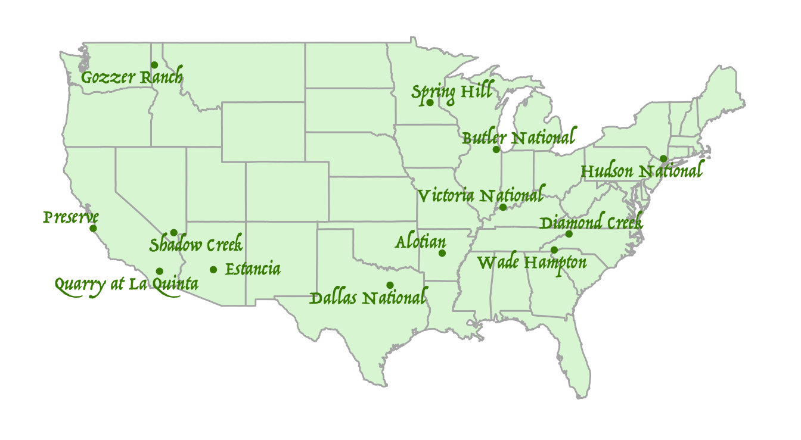
| Course | Location | Year Designed | Golf Digest | Golf Magazine | Average |
|---|---|---|---|---|---|
| Pacific Dunes | Bandon, OR | 2001 | 17 | 19 | 18 |
| Pinehurst (No. 2) | Pinehurst, NC | 1935 | 29 | 11 | 20 |
| Kiawah Island (Ocean) | Kiawah Island, SC | 1991 | 24 | 31 | 27.5 |
| Bethpage (Black) | Farmingdale, NY | 1936 | 37 | 30 | 33.5 |
| Bandon Dunes | Bandon, OR | 1999 | 36 | 44 | 40 |
| TPC Sawgrass | Ponte Vedra Beach, FL | 1980 | 49 | 45 | 47 |
| Bandon Trails | Bandon, OR | 2005 | 69 | 38 | 53.5 |
| Old Macdonald | Bandon, OR | 2010 | 50 | 66 | 58 |
| Erin Hills | Erin, WI | 2006 | 42 | - | - |
| Spyglass Hill | Pebble Beach, CA | 1966 | 45 | - | - |
| Pasatiempo | Santa Cruz, CA | 1929 | - | 59 | - |
| Gamble Sands | Brewster, WA | 2014 | - | 61 | - |
| Streamsong (Red) | Streamsong, FL | 2012 | - | 77 | - |
| Sheep Ranch | Bandon, OR | 2020 | - | 80 | - |
| Prairie Club | Valentine, NE | 2010 | - | 82 | - |
| Sand Valley | Nekoosa, WI | 2017 | - | 91 | - |
| Pinehurst (No. 4) | Pinehurst, NC | 2018 | - | 92 | - |
| Streamsong (Blue) | Streamsong, FL | 2012 | - | 95 | - |
| Mammoth Dunes | Nekoosa, WI | 2018 | - | 96 | - |
Good news, comrades! Not all of the top 100 is stacked with stuffy, expensive private clubs - there are also some stuffy, expensive public courses as well. But remember, $400 for a round of golf is a hell of a lot less expensive than $100,000 for initiation fees.
The Bandon group is obviously the #1 target here, but after that I would set up shop at Bethpage, the unholy union of Pine Valley and the DMV.
Worth noting is the Ocean Course’s circuitous route to its position near the top of the charts. The diabolical Dye track had Uber-esque post-IPO drops in both magazines that threatened to boot it out of the top 100 altogether, but in the early 2000s each publication moved in tandem to solidify the course’s status in the top 25.
Also noteworthy is the precipitous drop of Pinehurst No. 2 in Golf Digest’s list after its extreme makeover by Coore and Crenshaw. Golf Digest raters must not like the color brown.
One of the most surprising data points in the Golf Magazine 2020 ranking is Spyglass Hill falling all the way out of the list from #54, after being ranked consistently in the 40s and 50s since the mid-1990s.
Tom Fazio’s checks to the Golf Magazine raters apparently didn’t clear
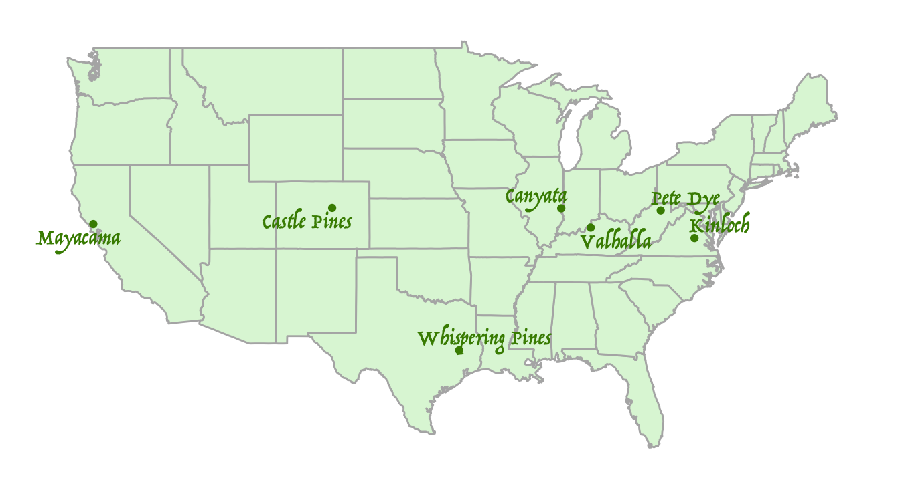
| Course | Location | Year Designed | Golf Digest | Golf Magazine | Average |
|---|---|---|---|---|---|
| Wade Hampton | Cashiers, NC | 1987 | 25 | 50 | 37.5 |
| Gozzer Ranch | Harrison, ID | 2007 | 32 | 70 | 51 |
| Shadow Creek | North Las Vegas, NV | 1990 | 26 | 81 | 53.5 |
| Alotian | Roland, AR | 2004 | 31 | - | - |
| Victoria National | Newburgh, IN | 1998 | 43 | - | - |
| Butler National | Oak Brook, IL | 1974 | 47 | - | - |
| Dallas National | Dallas, TX | 2002 | 65 | - | - |
| Estancia | Scottsdale, AZ | 1995 | 70 | - | - |
| Quarry at La Quinta | La Quinta, CA | 1994 | 77 | - | - |
| Hudson National | Croton-on-Hudson, NY | 1996 | 81 | - | - |
| Diamond Creek | Banner Elk, NC | 2003 | 90 | - | - |
| Spring Hill | Wayzata, MN | 1999 | 93 | - | - |
| Preserve | Carmel, CA | 2000 | 96 | - | - |
The Tom Fazio aesthetic represents the clearest difference between the two magazines. There are six Fazio courses in the top 50 of Golf Digest’s rankings and one (just barely) in Golf Magazine’s. Alotian was once #14 in Golf Digest (now #31) and is unranked in Golf Magazine.
It’s easy to joke about this situation, but one positive effect of the Golf Digest love for Fazio is to add some geographic diversity to the rankings. Places like western North Carolina, Arkansas, Idaho, Arizona, and Palm Springs weren’t lucky enough to get golden age courses and are thus largely locked out of the Acela corridor-heavy Golf Magazine list.
A few more lush, luxurious tracks that Golf Digest loves and Golf Magazine doesn’t (non-Fazio edition)
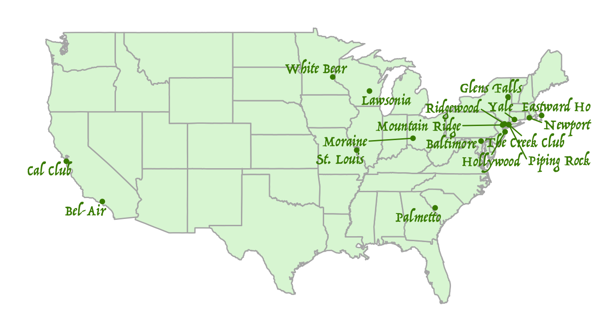
| Course | Location | Year Designed | Golf Digest | Golf Magazine | Average |
|---|---|---|---|---|---|
| Castle Pines | Castle Rock, CO | 1981 | 48 | - | - |
| Whispering Pines | Trinity, TX | 2000 | 54 | - | - |
| Canyata | Marshall, IL | 2004 | 62 | - | - |
| Pete Dye | Bridgeport, WV | 1994 | 64 | - | - |
| Kinloch | Manakin-Sabot, VA | 2001 | 66 | - | - |
| Valhalla | Louisville, KY | 1986 | 84 | - | - |
| Mayacama | Santa Rosa, CA | 2001 | 100 | - | - |
Some of these could also be placed in the “trouble in paradise” category…
Some ancient clubs that Golf Magazine loves and Golf Digest doesn’t
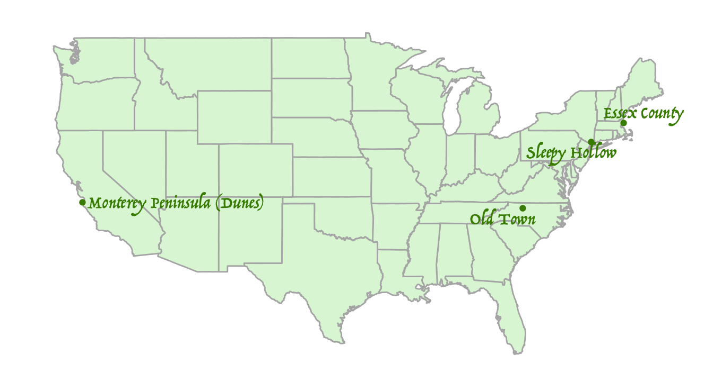
| Course | Location | Year Designed | Golf Digest | Golf Magazine | Average |
|---|---|---|---|---|---|
| Cal Club | South San Francisco, CA | 1926 | - | 27 | - |
| Eastward Ho | Chatham, MA | 1922 | - | 53 | - |
| Piping Rock | Locust Valley, NY | 1913 | - | 56 | - |
| The Creek Club | Locust Valley, NY | 1923 | - | 62 | - |
| Moraine | Dayton, OH | 1930 | - | 65 | - |
| Bel-Air | Los Angeles, CA | 1926 | - | 68 | - |
| Ridgewood | Paramus, NJ | 1929 | - | 74 | - |
| Baltimore | Lutherville, MD | 1926 | - | 75 | - |
| White Bear | Dellwood, MN | 1912 | - | 76 | - |
| St. Louis | St. Louis, MO | 1914 | - | 78 | - |
| Hollywood | Deal, NJ | 1912 | - | 83 | - |
| Newport | Newport, RI | 1899 | - | 84 | - |
| Glens Falls | Queensbury, NY | 1912 | - | 86 | - |
| Lawsonia | Green Lake, WI | 1930 | - | 87 | - |
| Mountain Ridge | West Caldwell, NJ | 1929 | - | 90 | - |
| Palmetto | Aiken, SC | 1895 | - | 93 | - |
I haven’t played most of these courses, but the prospect of a post-round beer in a club room lined with wood paneling and priceless memorabilia makes them much more appealing than most all of the Fazio/Nicklaus/Dye Golf Digest set.
Back in vogue, for now at least
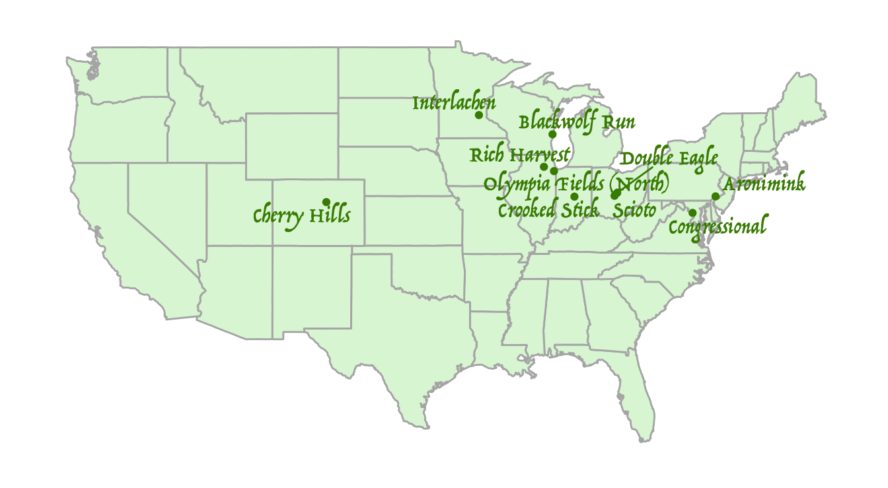
| Course | Location | Year Designed | Golf Digest | Golf Magazine | Average |
|---|---|---|---|---|---|
| Sleepy Hollow | Briarcliff Manor, NY | 1915 | 89 | 36 | 62.5 |
| Essex County | Manchester, MA | 1917 | 73 | 64 | 68.5 |
| Old Town | Winston-Salem, NC | 1939 | 98 | 41 | 69.5 |
| Monterey Peninsula (Dunes) | Pebble Beach, CA | 1924 | 79 | 85 | 82 |
These classic courses have recently returned to the rankings; time will tell whether they have staying power.
Trouble in paradise, part 2: catch the falling knife
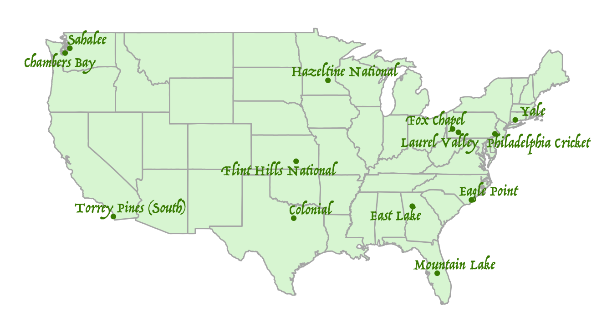
| Course | Location | Year Designed | Golf Digest | Golf Magazine | Average |
|---|---|---|---|---|---|
| Cherry Hills | Cherry Hills Village, CO | 1923 | 72 | 100 | 86 |
| Aronimink | Newtown Square, PA | 1928 | 85 | 89 | 87 |
| Scioto | Columbus, OH | 1916 | 57 | - | - |
| Interlachen | Edina, MN | 1911 | 58 | - | - |
| Olympia Fields (North) | Olympia Fields, IL | 1922 | 75 | - | - |
| Congressional | Bethesda, MD | 1962 | 80 | - | - |
| Double Eagle | Galena, OH | 1992 | 92 | - | - |
| Rich Harvest | Sugar Grove, IL | 1999 | 94 | - | - |
| Blackwolf Run | Kohler, WI | 1990 | 97 | - | - |
| Crooked Stick | Carmel, IN | 1967 | 99 | - | - |
With the fierce competition in the golf course market, declining demand for country club memberships, and unpredictable, shifting architectural tastes across a variety of different constituencies, efforts to stay in the Top 100 will be expensive - and might not even work. Good luck!
Looking at this group of courses along with the previous Trouble in Paradise map, there is obviously something going on in the Midwest. Has the population of raters become more urban and coastal?
Pouring one out for the recently and dearly departed

| Course | Location | Year Designed | Golf Digest 2017 | Golf Magazine 2017 |
|---|---|---|---|---|
| Yale | New Haven, CT | 1923 | - | 55 |
| East Lake | Atlanta, GA | 1915 | - | 70 |
| Fox Chapel | Pittsburgh, PA | 1926 | - | 81 |
| Philadelphia Cricket | Flourtown, PA | 1922 | - | 86 |
| Torrey Pines (South) | La Jolla, CA | 1957 | - | 87 |
| Colonial | Fort Worth, TX | 1936 | - | 92 |
| Hazeltine National | Chaska, MN | 1962 | - | 93 |
| Laurel Valley | Ligonier, PA | 1959 | 95 | - |
| Flint Hills National | Andover, KS | 1997 | 97 | - |
| Chambers Bay | University Place, WA | 2007 | - | 98 |
| Sahalee | Sammamish, WA | 1969 | 98 | - |
| Mountain Lake | Lake Wales, FL | 1921 | - | 99 |
| Eagle Point | Wilmington, NC | 2000 | 100 | - |
Some of these were a long time coming (Laurel Valley, Torrey Pines, Colonial), while others represented short blips in the top 100 (Mountain Lake, Philadelphia Cricket). But Yale is definitely the saddest of all. It turns out that closing your course and letting it grow over into a giant weed pasture is not good for your ratings.